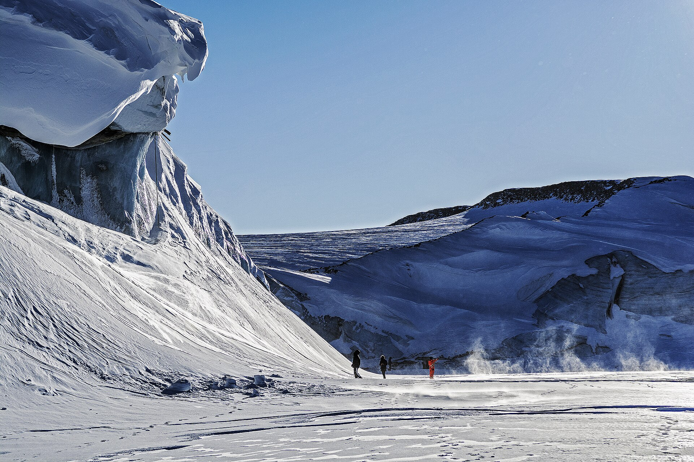
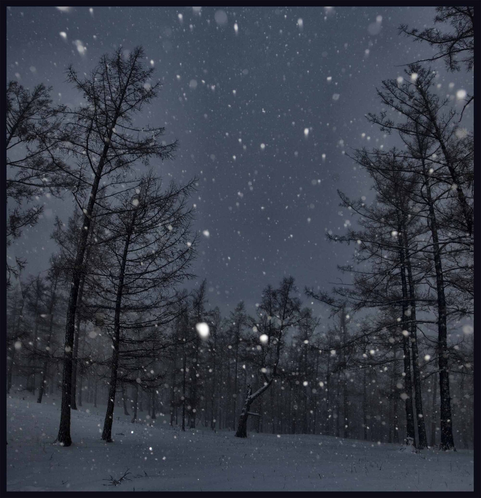
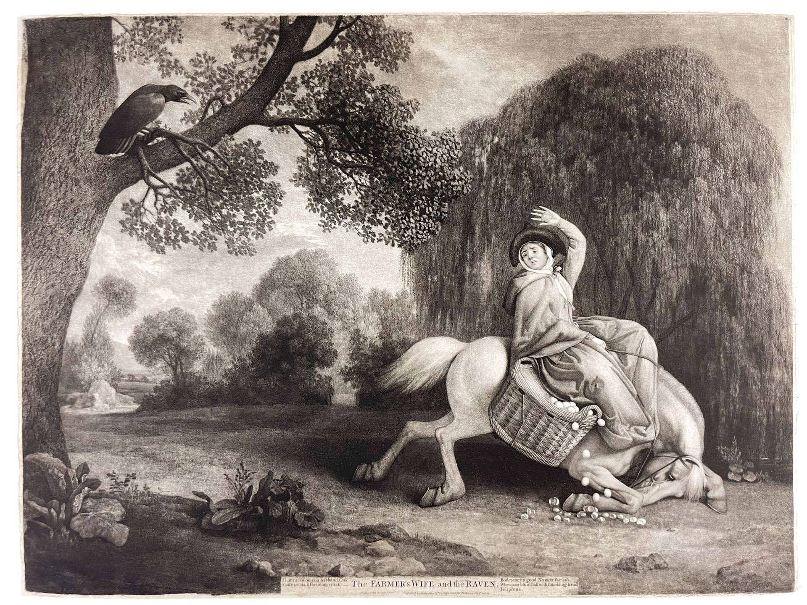

What the old man meant
Jon knew the right call would turn the Watch against him. Aemon did not tell him what to do. He told him who had to do it.



The boy waits until everyone agrees. The man decides, then carries what follows. I named this site after that line so I see it every time I open a new tab.
Kill the boy
0 of 5 killed. Tap a row to finish him.
| On | The boy | The man |
|---|
The lab